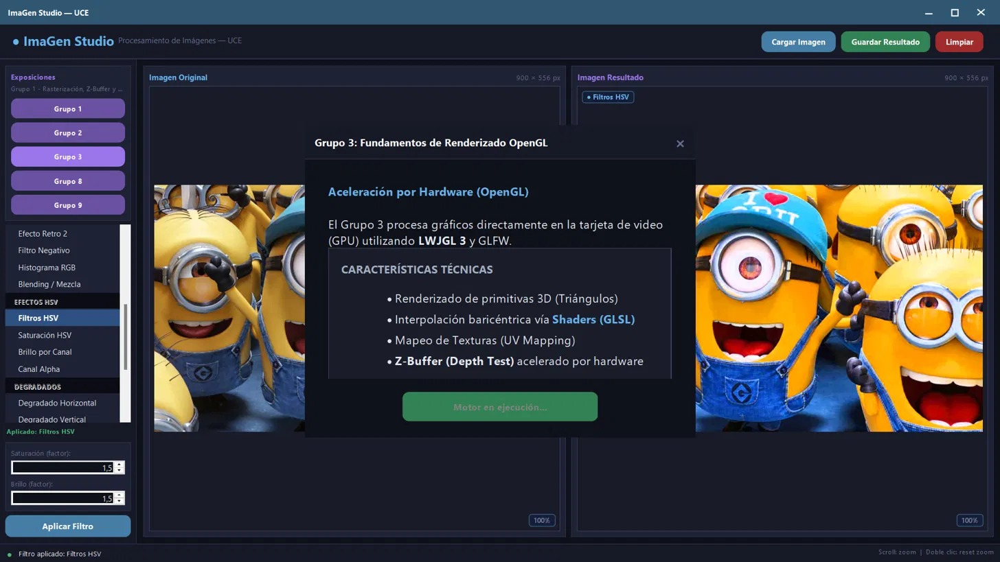

Renderizado
Llevado al Límite
Un motor de procesamiento de imágenes y aceleración 3D construido con Java Swing y OpenGL (LWJGL 3).

Universidad Central del Ecuador
Asignatura: Taller II
Desarrolladores: Diego Borja, Marielena Gonzalez, Mateo Jami
Docente: Ing. Wladimir Carrillo
